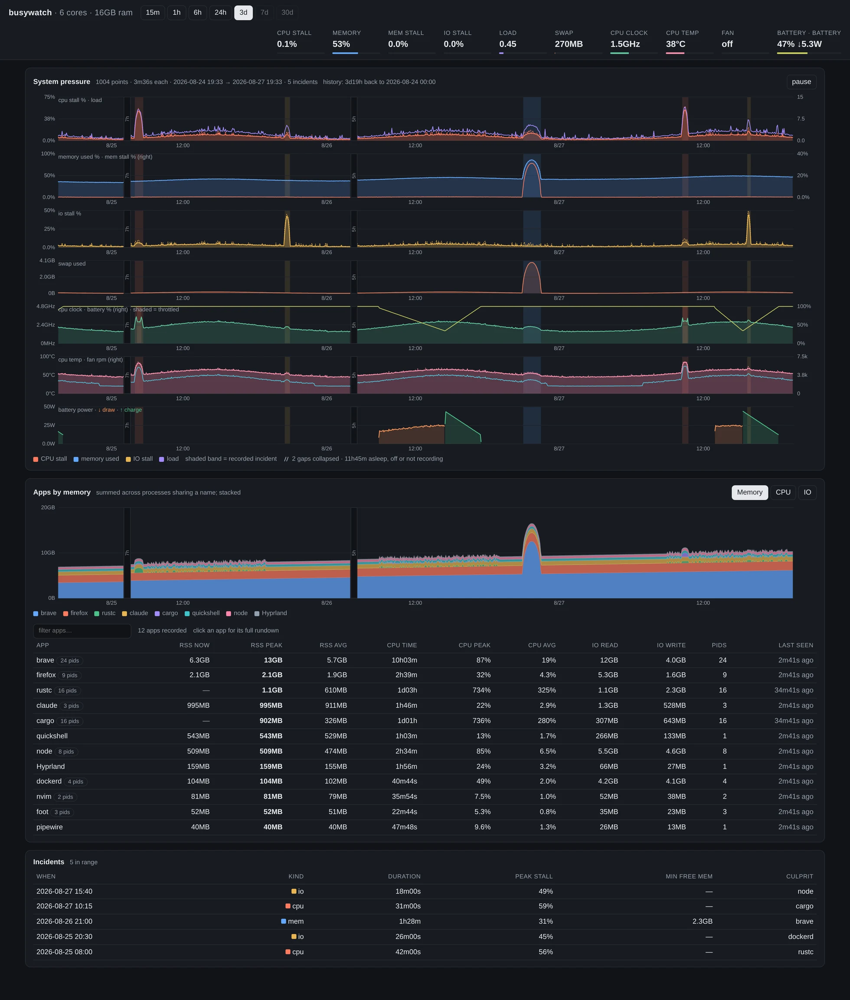
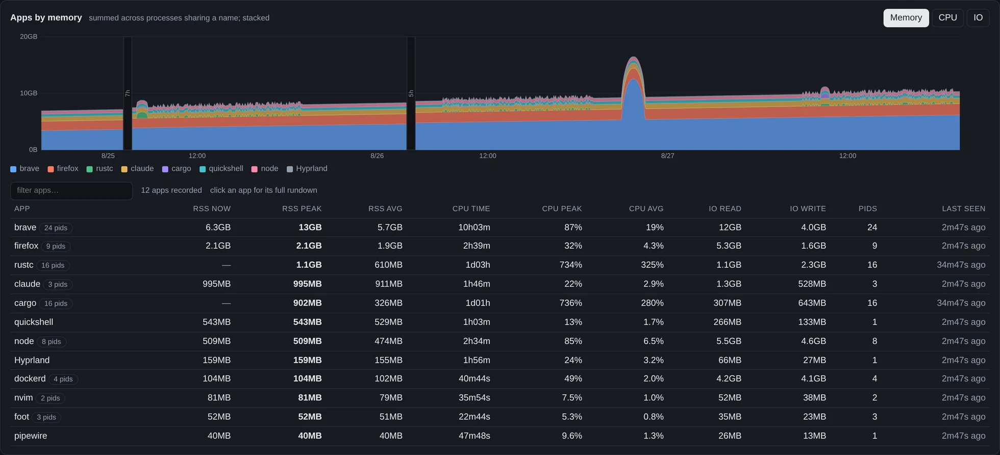
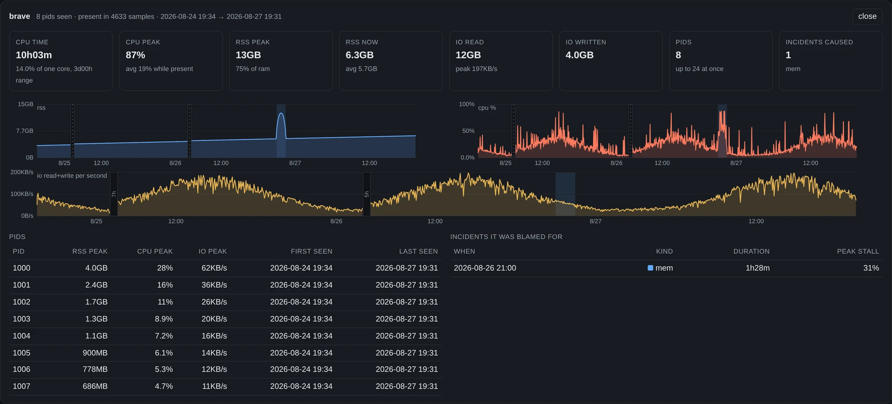

Pressure stall information · desktop notifications · history
busywatch does not poll your machine. It hands the kernel a threshold and blocks. When something stalls your desktop, it wakes up, names the process responsible, and writes down what happened — so the thing that ate an hour while you were away is still there to find.
$ git clone https://github.com/thieso2/busywatch
Two dependencies. Under 2 MB. Build and install →
How it costs nothing
Linux already measures how long tasks spend stalled
waiting for CPU, memory and IO. busywatch registers a trigger on those files and sleeps in
poll() until the kernel decides there is something to say.
One write to each of /proc/pressure/{cpu,memory,io}: wake me
if tasks stall 500 ms inside any 1 s window.
No timer, no sampling loop, nothing on a schedule. The process sits in
poll() until the kernel wakes it.
A trigger alone is not a warning — a compile or a page load fires them constantly.
Only avg60 over the threshold counts.
A toast with the top consumers, then a re-check every 10 s until pressure halves — and an all-clear that replaces it.
Every threshold is a flag. Without
CAP_SYS_RESOURCE — or on a kernel without PSI — it falls back to
reading the same files every ten seconds, which is still a few hundred bytes of IO.
What a warning says
The notification carries the numbers that tripped it and the processes at the top of the list, summed per command name — so a browser's hundred renderers read as one culprit, not a hundred rows of noise.
Each resource owns its own toast, so a memory warning never silently erases a CPU one, and the all-clear replaces the warning it belongs to. Clicking either opens the history — as a chromeless window, on the resource that raised it, over a range wide enough to hold the whole incident.
The history
A heartbeat sample every minute — and every ten seconds while an incident runs, so the record is dense exactly where it matters. The page charts 15 minutes to 30 days, embeds everything it needs, and is served read-only on loopback.

Per application
Every process is counted under its command name, so twenty renderers are one row — and the totals are summed before the top-N cut, so the number is the real total, not the sum of whichever processes happened to make the list.
Switch the stack between memory, CPU and IO. Filter and sort the rundown on any column: RSS now, peak and average, CPU time, peak and average CPU, bytes read and written, how many pids, when it was last seen.

One application
From the rundown, the legend, or an incident's culprit: what it added up to, its memory, CPU and IO over the range, every pid that carried it, and the incidents it was blamed for. The view lives in the URL, so a reload comes back where you were.

Without a browser
The database is plain SQLite, and the CLI answers the questions you actually have: what has been holding memory, what burned the CPU last week, what one application did all day.
The raw per-sample rows stay in the file for whatever
sqlite3 query you want to write yourself.
top 5 by cpu over the last 3d00h (since 2026-08-24 19:31) process rss peak rss avg rss now cpu time cpu pk rustc 1.1GB 610.2MB — 1d03h 734% cargo 901.8MB 325.7MB — 1d01h 736% brave 12.9GB 5.7GB 6.3GB 10h03m 87% firefox 2.1GB 1.9GB 2.1GB 2h39m 32% node 508.9MB 474.0MB 508.9MB 2h34m 85%
brave — last 3d00h cpu time 10h03m 14.0% of one core peak 87% rss peak 12.9GB avg 5.7GB now 6.3GB (75% of ram at peak) io read 12.0GB written 4.0GB peak 196.7KB/s presence 4635 samples 8 pid(s), up to 24 at once incidents 1 it was blamed for: 2026-08-26 21:00 [mem] 1h28m peak 31%
What it is made of
libc and
rusqlite. That is the whole list.poll(). No timer,
no async runtime, no sampling loop.~/.local/state/busywatch/history.db
— SQLite you can query yourself.--app mode on a
busywatch.localhost alias, so the window carries an app_id of its own
for a compositor rule to catch on Wayland.Install
# build and install the binary cargo build --release install -m755 target/release/busywatch ~/.local/bin/busywatch # PSI triggers need this capability sudo setcap cap_sys_resource+ep ~/.local/bin/busywatch # the unit runs `busywatch --web` systemctl --user enable --now busywatch.service
# builds straight from the repository cd packaging makepkg -si systemctl --user enable --now busywatch.service # binary in /usr/bin, user unit in /usr/lib/systemd/user, # and the capability re-applied on every upgrade
setcap.
Capabilities live on the inode, so a fresh copy of the binary arrives without one. Without it
busywatch still runs — it just reads the pressure files every ten seconds instead of being woken.The history UI is then at
http://127.0.0.1:8787/, or run
busywatch web on its own against the database.
Why it exists
WirePlumber silently burned 2.5 CPU-hours digesting a stuck Bluetooth discovery scan. A warning naming the hot process would have surfaced that in minutes instead of hours.
The history and the web UI came next, for the slower version of the same problem: something that grows a gigabyte an hour while you are not looking.